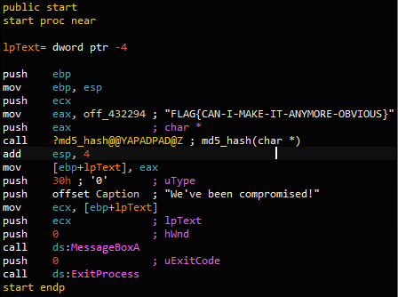

Task 2 Strings::Challenge 1

The flag is used as a parameter for the md5_hash function in the main function. The flag is not obfuscated or encrypted. Therefore it can be read straight away without any further manipulations.
What is the flag of which that MD5 gets generated?
Answer: FLAG{CAN-I-MAKE-IT-ANYMORE-OBVIOUS}